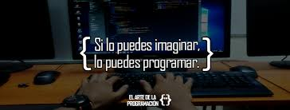

-

-
Edward Fernando Perez Rocha
Esa práctica creo que fue más desafiante que las demás por utilizar más elementos que las prácticas anteriores. De los retos que encontré, los principales fueron: crear una aplicación dinámica con puro javascript, capturar información del usuario, crear una función que generara algún dibujo en el canvas, entender el funcionamento con una documentación limitada. Fuera de eso creo que la práctica fue bien divertida, y enriquecedora.
-
Bryan Alberto Flores García
Canva y JavaScript son dos herramientas muy utilizadas para la realización de páginas web, tienen muchas funciones que nos ayudan el la realización de sitios web. JavaScript nos sirve para darle funcionalidad a la página por ejemplo llenar un formulario, y ser mas interactiva la página, y canva nos sirve para crear gráficos con diferentes figuras, como en este caso hicimos un dibujo interactivo con estas dos herramientas.
-
Gerardo Carrera Torres
Esta práctica fue más compleja que las otras ya que se le incluyeron más funciones, funciones que tienen que quedar bien establecidas si no pueden afectar al diseño de la página. Aquí aplicamos la herramienta Canvas para el desarrollo de la página, y también JavaScript, que en combinación hicimos la función principal de la página, hacer que el usuario pueda interactuar haciendo un dibujo. Fue muy buena práctica por el desarrollo que tiene, aun que si toma tiempo aplicar las funciones y hacer que cumplan su tarea
-
Shakty Betzahbe Salinas Huerta
El modelo canvas es un cuadro para tener siempre a la vista e ir modificando y adaptándolo al momento que vive tu proyecto.
Es el punto de partida para desarrollar estrategias, tomar decisiones y caminos para hacer avanzar tu empresa.
No sustituye a un plan de empresa pero contiene la suficiente información para que surta el mismo efecto.
Aunque se trata de un modelo sencillo y útil en general y, de ahí su éxito, algunas voces manifiestan una carencia a la hora de valorar el emprendimiento de una nueva actividad: Carece de un apartado para analizar tu competencia, tu estrategia de marketing o el mercado.
-
Diego Armando Hernandez Rivera
El modelo canvas es un gráfico en el que hay que centrarse constantemente y seguir ajustándolo y adaptándolo al segundo que atraviesa su empresa. Es la etapa inicial para fomentar sistemas, simplemente decidir y formas de impulsar su organización. No sustituye a una estrategia probada en el terreno, pero contiene datos suficientes para tener un impacto similar.